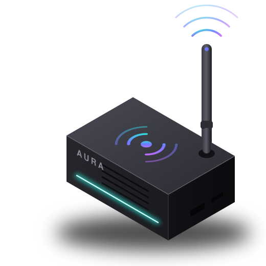
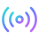

Appareil inconnu sur le réseau
Un appareil absent du référentiel se branche. L'alerte part sur le PC et le téléphone, avec le port du switch concerné.
Projet tutoré · BUT Réseaux & Télécoms · IUT de Valence
Le réseau et les ondes.
Au même endroit.
AURA repère ce qui se branche et ce qui émet dans vos locaux, sans installer le moindre agent sur les postes.
Le problème
Un appareil pirate n'a pas d'agent. Il n'apparaît dans aucun inventaire. Une borne Wi‑Fi branchée sous un bureau non plus. Pourtant, les deux sont bien sur votre réseau.
Fonctionnement
Une sonde Raspberry Pi, équipée d'un dongle Wi-Fi en mode monitor, écoute les trames de gestion avec Kismet. Elle recense les bornes, les SSID et les adresses MAC autour d'elle. Elle ne fait qu'écouter : elle n'émet rien et ne lit aucun contenu.
NetAlertX scanne le réseau filaire (ARP, DHCP, SNMP). Chaque appareil est comparé à un référentiel connu / inconnu, alimenté par import CSV, par GLPI ou par un mode apprentissage.
Le moteur AURA relie un événement radio à un événement réseau dans une même fenêtre de temps. Un poste qui disparaît du réseau au moment où une nouvelle borne apparaît, c'est probablement un partage de connexion.
En lisant les tables MAC des switchs en SNMP, AURA retrouve sur quel port physique est branché l'appareil ou la borne suspecte. L'administrateur sait où aller.
L'alerte arrive sur le tableau de bord et sur le téléphone. La gravité est calculée par les règles ; l'IA se contente de rédiger un résumé en français et de proposer une action.
Scénarios de démonstration
Un appareil absent du référentiel se branche. L'alerte part sur le PC et le téléphone, avec le port du switch concerné.
Une borne non déclarée est branchée au réseau. La sonde la voit dans les ondes, puis AURA retrouve son port de switch.
Un poste connu quitte le réseau et rejoint un point d'accès apparu au même moment. Il sort sur Internet sans pare-feu ni journalisation.
Plusieurs adresses MAC arrivent d'un coup derrière le même port. Quelqu'un a glissé un switch sous un bureau.
Tableau de bord
Un aperçu du tableau de bord que nous développons. Les alertes ci-dessous défilent en direct, à partir de données fictives.
La sonde
Le serveur est en salle technique et n'a pas de radio. Il faut donc un capteur physiquement présent dans la pièce à surveiller : c'est le rôle de la sonde.

Écoute passive API REST Kismet Aucune émissionSécurité & vie privée
L'accès à distance passe par un VPN (WireGuard ou Tailscale). L'interface est protégée par mot de passe, jamais celui par défaut.

La sonde relève des adresses MAC et des noms de réseau. Elle ne capture aucun contenu et n'émet aucun signal.
Mots de passe, clés d'API et jetons restent dans un fichier .env ignoré par Git. NetAlertX est tenu à jour.
Les adresses MAC sont des données personnelles. Nous documentons le traitement, sa durée de conservation et son cadre légal.
Ce site applique les mêmes principes : aucun cookie, aucun traceur, aucune police ni script chargé depuis un service tiers. En savoir plus
Feuille de route
NetAlertX sur une VM Proxmox, premiers scans
Kismet sur le Raspberry Pi et plugin NetAlertX
Import CSV, validation, mode apprentissage
Règle « partage de connexion » et alerte
Port du switch par SNMP, radio 433 / 868 MHz en bonus
Tableau de bord, graphe, cartographie, VLAN
Résumé des alertes, connecteur GLPI, capteur IR
Accès distant sécurisé, analyse de risque
Scénarios répétés, vidéo, rapport
Open source
AURA s'appuie sur des briques libres reconnues et leur ajoute ce qu'elles ne savent pas faire. Nos plugins NetAlertX sont publiés sous GPL 3.0.
L'équipe
BUT Réseaux & Télécommunications, parcours cybersécurité, IUT de Valence, promotion 2026-2027.
Chef de projet
Planning, collecte NetAlertX, back-end, sonde Wi-Fi, documentation technique et pitch.
Sécurité & infrastructure
Durcissement, analyse de risque, VM serveur, capteur infrarouge et communication.
IA, design & RGPD
API vers l'IA, charte graphique et maquettes, cadre légal, guide utilisateur et tests d'ergonomie.
Interface & conception
Tableau de bord web, boîtiers imprimés en 3D, montage vidéo et communication.
Votre avis compte
Trente secondes, cinq questions, aucune donnée personnelle demandée. Vos réponses nous aident à améliorer AURA.
Répondre au questionnaireContact & support
Adresse Proton Mail bientôt disponible